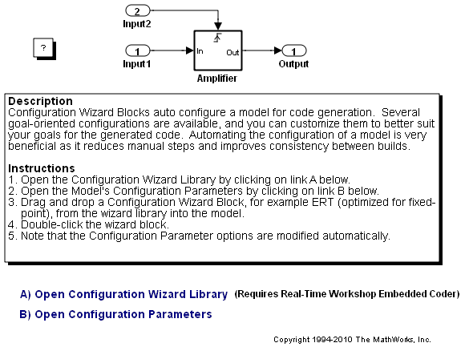

コマンドラインによるモデルの設定
Real-Time Workshop と Real-Time Workshop® Embedded Coder™ には、生成されたコードをカスタマイズするための設定オプションが多数用意されています。コード生成オプションには、モデルの設定セットとも呼ばれる Simulink® コンフィギュレーション パラメーターからアクセスします。
設定の決定とトレードオフは、生成されたコードをどのように使用し操作するかによって異なります。つまり、デバッグ、トレーサビリティ、コード効率、安全対策へのニーズに最適に一致する設定を選択します。機能、スクリプト、およびドキュメンテーションを使用すると、アプリケーションに最適なモデル設定セットを容易に作成できます。
Real-Time Workshop には、特定の目的のためにモデルを速やかに設定して確認するためのプッシュボタン機能がありますが、MATLAB スクリプトを使用してモデル設定手順を自動化するのが一般的です。このデモの手順では、次の項目について説明します。
- 設定パラメーターの操作概念
- コード生成オプションを理解するためのドキュメンテーション
- モデルの設定を自動化するためのツールとスクリプト
これらの基本的なスキルがあれば、プロジェクトに最適な自動設定スキームの設定をうまく進めることができます。
目次
コンフィギュレーション パラメーターのワークフロー
コンフィギュレーション パラメーターには、1つのモデル内または複数のモデルにわたって持続性を維持するワークフローが数多くあります。必要に応じて、設定セットをコピーまたは参照として扱う場合もあります。この例では、モデルのアクティブな設定セットを直接操作するための基本手順を示します。設定セットの機能とワークフローの包括的な説明は、Simulink ドキュメンテーションの設定セットを参照してください。
設定セットの基本的な操作
モデルを開く
model='rtwdemo_configwizard';
open_system(model)
 モデルのアクティブな設定セットを取得する
cs = getActiveConfigSet(model);
Real-Time Workshop 製品では、コード生成オプションのサブセットを公開しています。Real-Time Workshop を使用する場合は、Generic Real-Time (GRT) ターゲットを選択します。
switchTarget(cs,'grt.tlc',[]);
Real-Time Workshop Embedded Coder 製品では、コード生成オプションの完全なセットを公開しています。Real-Time Workshop Embedded Coder を使用する場合は、Embedded Real-Time (ERT) ターゲットを選択します。
switchTarget(cs,'ert.tlc',[]);
GRT ベースのターゲットと ERT ベースのターゲットの両方に対して作成するモデルの設定を自動化するには、設定セットの IsERTTarget 属性が役立ちます。
isERT = strcmp(get_param(cs,'IsERTTarget'),'on');
モデルまたは設定セットを使用してコード生成オプションを操作できます。次の例では、モデルから間接的にオプションを取得し、設定しています。
inlineParams = get_param(model,'InlineParams'); % Get InlineParams set_param(model,'InlineParams',inlineParams) % Set InlineParams
次の例では、設定セットからオプションを直接取得し、設定しています。
if isERT lifespan = get_param(cs,'LifeSpan'); % Get LifeSpan set_param(cs,'LifeSpan',lifespan) % Set LifeSpan end
設定オプションの概要
コード生成オプションの一覧に、デバッグ、トレーサビリティ、コード効率、安全対策に関するトレードオフが記載されています。
設定スクリプトのサンプル
Real-Time Workshop では、アプリケーションを作成するための開始点として使用できる設定スクリプトのサンプルが用意されています。関連する GRT および ERT コード生成オプションの一覧は、rtwconfiguremodel.m に含まれています。
設定ウィザードのブロック
Real-Time Workshop Embedded Coder には、特定の目的のためにモデルの設定を自動化する設定ウィザードのブロックが用意されています。事前定義されたブロックには、次の目的に使用できる設定が含まれています。
- 固定小数点データ用に最適化された ERT
- 浮動小数点データ用に最適化された ERT
- 固定/浮動小数点データ用に最適化された GRT
- 固定/浮動小数点データ用の GRT デバッグ設定
- カスタム (ユーザーがスクリプトを指定)
モデルを設定するには、ブロックをモデルにドロップし、ダブルクリックします。これらの有益なブロックの対話型デモについては、Simulink モデル rtwdemo_configwizard を参照してください。